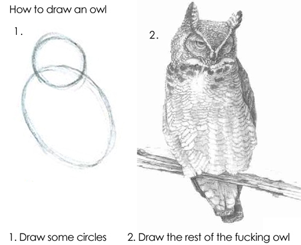

How to draw an owl
wise advice from an internet meme

Much of project planning resolves around taking an idea, i.e. the badly drawn concept, to a fully detailed drawing (of an owl). However, both images at the beginning only live in your head. The initial idea, and the ideal outcome are separated by what is truly feasible. Most projects fail when they do not account for the practical difference between what it takes to manifest the idea and realize the ideal solution.
The process (often) matters most
Given that no project is free of setbacks of all sorts, it is key to realize that most of the project will be spent not focusing on the final details of the ideal image. Most time will be spent on figuring out ways how to even start drawing (the damn owl). A failure to account for the process and a singular focus on the ideal will run any project into the ground, from a resource or human perspective (causing undue stress).
[Important note: in some projects there is no room for outright failure, but even high risk projects get revisions!]
Keep track of projects
Given that the project process is more important than the outcome it is key to keep track of progress, more precisely:
- why you took certain decisions?
- what went wrong, and how you resolved it (so others don’t have to repeat this mistake)?
- track the physical constraints of an implementation (for Machine Learning this could be GPUs used)?
- track limits on scalability (are processes easily parallelizable)?
- documentation, documentation, more documentation…
Document all these things extensively and show where value was added despite setbacks.
Failing forward
Nobody likes to bring bad news, but if your project does not manage to draw (the owl) results finding added value in other aspects of a project is key. This does not only cover lessons learned (as listed above), but also covers proposing ways out of the impasse more generally. You can fail forward by pointing out why things didn’t work out the way it should have happened, but more so, how these issues can be resolved and avoided (and at what cost) in the future.
Where possible generate added value by providing small tangible products during the project. To continue the owl analogy, you might not be able to draw the fully detailed owl, but you might have put together a method to draw a very nice cartoon owl. This, on its own, has a certain value. Discarding this result because it did not meet the ideal would be foolish.
Reuse
Citation
@online{hufkens2023,
author = {Hufkens, Koen},
title = {How to Draw an Owl},
date = {2023-10-28},
url = {https://khufkens.com/posts/how-to-draw-an-owl-advice-from-a-meme},
langid = {en}
}